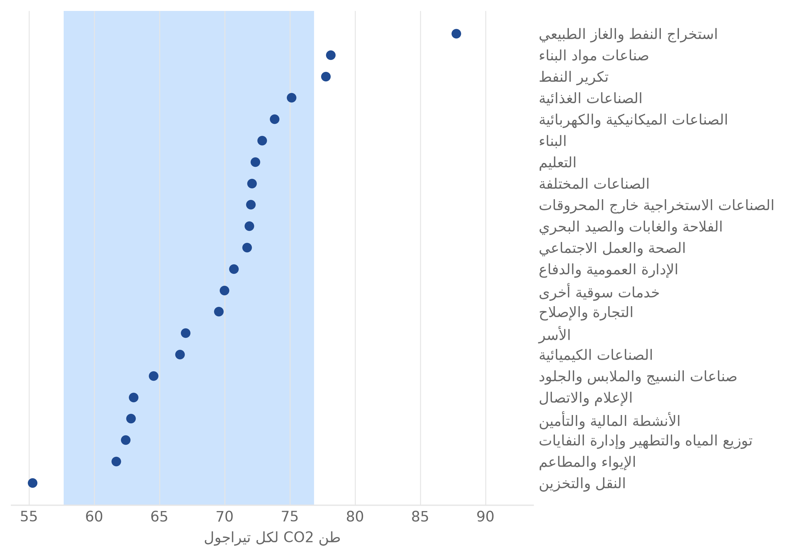
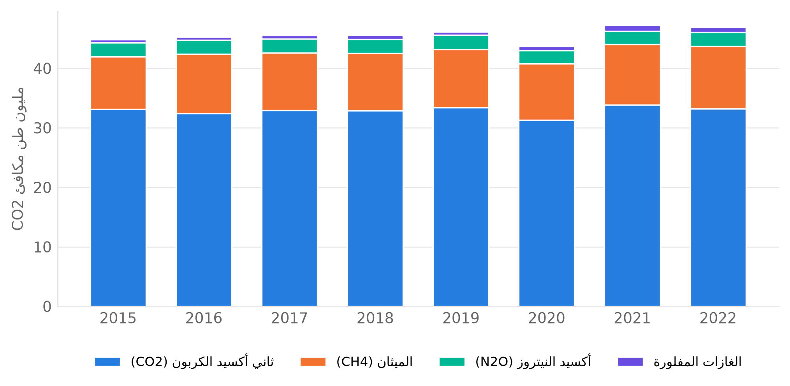
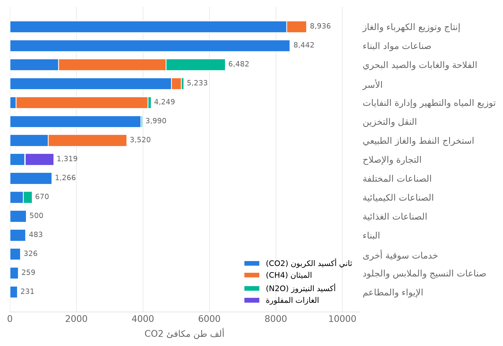
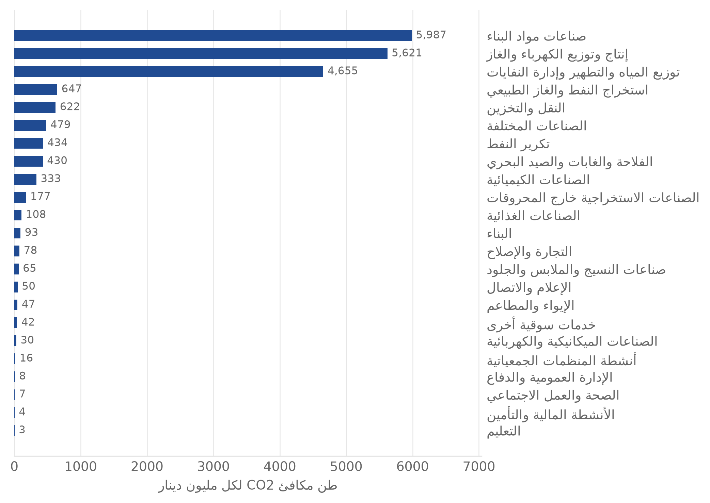

| البرنامج | الغرض |
|---|---|
| extract/02_extract_crt_inventory.py | الجداول المشتركة للإبلاغ في جرد غازات الاحتباس الحراري |
| extract/03_extract_supply_use_tables.py | جداول الموارد والاستخدامات في الحسابات القومية |
| pefa/11_build_activity_keys.py | مفاتيح النقل البري وقطاع الخدمات (من حسابات الطاقة) |
| aea/20_prepare_ghg_inventory.py | الانبعاثات حسب الفئة والغاز، والنطاق، ورموز الأداة |
| aea/21_build_conversion_matrix.py | مصفوفة التحويل التونسية من فئات الجرد إلى الأنشطة |
| aea/22_compile_aea_tables.py | الانبعاثات حسب النشاط مع تعديلات الإقامة، والتحقق بأداة I2A |
| aea/23_bridge_and_indicators.py | الربط بالجرد والمعقولية والكثافات |
| aea/24_export_aea.py | مصنفات إكسل بالإنجليزية والفرنسية والعربية |
| report/30_publish_tables.py | جداول وتسميات للوثائق ومستكشف البيانات |
حسابات انبعاثات الهواء في تونس
غازات الاحتباس الحراري حسب الفروع والأسر: المفاهيم وطرق الإعداد والنتائج، من 2015 إلى 2022
الملخص
تسجل حسابات انبعاثات الهواء (AEA) غازات الاحتباس الحراري التي يطلقها كل فرع من فروع الحسابات القومية والأسر، وفق القواعد نفسها التي تتبعها الحسابات القومية. وهي تجيب عن سؤال لا يجيب عنه جرد غازات الاحتباس الحراري، المنظم حسب العمليات التقنية، إجابة مباشرة: أي أجزاء الاقتصاد تنتج الانبعاثات، وكم تطلق لكل دينار من الإنتاج. تشرح هذه الوثيقة المفاهيم، وتصف كل خطوة من خطوات إعداد قابل للتكرار للحسابات من 2015 إلى 2022، وتعرض النتائج الأولى.
في سنة 2022، أطلقت فروع النشاط المقيمة والأسر 46.9 مليون طن من مكافئ ثاني أكسيد الكربون. وشكل ثاني أكسيد الكربون 71% من المجموع والميثان 22%. وكانت أكبر الجهات المطلِقة فروع «إنتاج وتوزيع الكهرباء والغاز» و«صناعات مواد البناء» و«الفلاحة والغابات والصيد البحري»، وأطلقت الأسر 11% من المجموع، أساسًا من سياراتها ومساكنها. ويوفق جدول ربط بين الحسابات والجرد الوطني، ويعيد الإعداد إنتاج نتائج أداة تحويل حسابات انبعاثات الهواء لصندوق النقد الدولي (I2A) بفارق لا يتجاوز 7e-12 ألف طن.
1 مقدمة
تبلغ تونس عن انبعاثاتها من غازات الاحتباس الحراري إلى اتفاقية الأمم المتحدة الإطارية بشأن تغير المناخ في جرد وطني، تنسقه الوكالة الوطنية للتحكم في الطاقة لقطاعي الطاقة والعمليات الصناعية، ووزارة الفلاحة للفلاحة واستخدام الأراضي، والديوان الوطني للتطهير للنفايات (Besbes, 2026). ويتبع الجرد المبادئ التوجيهية للهيئة الحكومية الدولية المعنية بتغير المناخ، ويصنف الانبعاثات حسب المصدر: احتراق الوقود في الصناعات الطاقوية، والنقل البري، والتخمر المعوي للماشية، ومصبات النفايات، وغير ذلك (Intergovernmental Panel on Climate Change, 2006).
ويخدم هذا التصنيف غرض الجرد جيدًا، لأنه يتبع العمليات التي تسبب الانبعاثات والطرق التي تُقدَّر بها. لكنه لا يبين أي الوحدات الاقتصادية تطلقها. فانبعاثات النقل البري تأتي من الأسر التي تقود سياراتها، ومن شاحنات الصناعات الغذائية، ومن حافلات فرع النقل وسيارات الأجرة. ويشمل الاحتراق في «القطاعات الأخرى» المتاجر والنزل والمكاتب والمساكن. وتعيد حسابات انبعاثات الهواء تنظيم الانبعاثات نفسها حسب فروع الحسابات القومية والأسر (Eurostat, 2015; United Nations وآخرون, 2014). وعندما تُسجَّل الانبعاثات بهذه الطريقة، يمكن مقارنتها بالإنتاج والقيمة المضافة والتشغيل وحسابات الطاقة، ويمكن أن تغذي النماذج الاقتصادية.
وقد طور صندوق النقد الدولي أداة في برنامج إكسل لهذا التحويل، هي أداة تحويل حسابات انبعاثات الهواء، المعروفة باسم I2A (International Monetary Fund, 2026; Pegoue, 2026). وتتبع هذه الوثيقة منطقها خطوة بخطوة. وتُنفَّذ الحسابات ببرامج نصية بلغة Python في المجلد https://github.com/renatovargas/tun-pefa-aea/tree/main/scripts، مدرجة في الجدول 1. وتحيل كل خطوة من قسم المنهجية إلى بطاقة برنامجها في الملحق الأول. وتعيد حسابات الانبعاثات استخدام مفتاحين من مفاتيح التوزيع في حسابات الطاقة، تصفهما الوثيقة المرافقة عن حسابات التدفقات المادية للطاقة.
2 المفاهيم
2.1 الانبعاثات بوصفها تدفقات بقايا
يعامل نظام المحاسبة البيئية والاقتصادية الانبعاثات بوصفها تدفقات بقايا: مواد يطلقها النشاط الاقتصادي فتغادر الاقتصاد وتدخل البيئة (United Nations وآخرون, 2014، القسم 3.6). وحسابات انبعاثات الهواء هي الجزء من هذه الحسابات الذي يخص الغازات والجسيمات المطلقة في الغلاف الجوي. وهي تتبع القواعد المحاسبية للحسابات القومية. فتُسجَّل الانبعاثات للوحدات الاقتصادية التي تولدها، أي فروع النشاط مصنفة كما في الحسابات القومية، والأسر بصفتها مستهلكة (Eurostat, 2015، الفقرات 32 إلى 38). أما انبعاثات الأسر بصفتها منتجة، كالمستغلة الفلاحية العائلية، فتنتمي إلى الفرع المعني.
2.2 غازات الاحتباس الحراري ووحدتها المشتركة
تغطي الحسابات غازات الاحتباس الحراري الواردة في الجرد. فثاني أكسيد الكربون يأتي أساسًا من حرق الوقود الأحفوري ومن بعض العمليات الصناعية كصناعة الإسمنت. والميثان يأتي من الماشية ومصبات النفايات وتسربات الغاز الطبيعي. وأكسيد النيتروز يأتي أساسًا من التربة الفلاحية والسماد الحيواني. والغازات المفلورة غازات صناعية تستخدم في التبريد والتكييف والمعدات الكهربائية. ويسخن كل غاز المناخ بدرجة مختلفة، فتُحوَّل الانبعاثات إلى مكافئ ثاني أكسيد الكربون بإمكانات الاحترار العالمي على مدى 100 سنة. وتستخدم تونس، كمعظم البلدان، قيم تقرير التقييم الخامس للهيئة، التي يعادل فيها طن الميثان 28 طنًا من ثاني أكسيد الكربون وطن أكسيد النيتروز 265 طنًا (Intergovernmental Panel on Climate Change, 2013).
2.3 الإقليم والإقامة
يسجل الجرد الانبعاثات التي تحدث على التراب الوطني أيًا كان مصدرها. أما الحسابات فتسجل الانبعاثات التي تتسبب فيها الوحدات المقيمة أينما حدثت (Eurostat, 2015، الفقرات 33 إلى 37). فشركة طيران تونسية تطير من باريس إلى مونتريال تطلق انبعاثات في الحسابات التونسية، في حين لا تدخلها شاحنة أجنبية تعبر تونس. ويخص هذا الفرق أساسًا النقل الدولي. وتبينه الحسابات في جدول ربط ينطلق من مجموع الحسابات، ويطرح انبعاثات المقيمين في الخارج، ويضيف انبعاثات غير المقيمين على التراب الوطني، فيصل إلى مجموع الجرد (Eurostat, 2015، الفقرات 227 إلى 230). ويبين الشكل 1 كيف يرتبط المجموعان.
flowchart LR AEA["مجموع الحسابات<br/>(الفروع + الأسر،<br/>مبدأ الإقامة)"] --> M1["ناقص المقيمين في الخارج<br/>(النقل الجوي والبحري)"] M1 --> P1["زائد غير المقيمين<br/>على التراب الوطني"] P1 --> INV["مجموع الجرد<br/>دون استخدام الأراضي<br/>(المبدأ الإقليمي)"] INV --> L["زائد استخدام الأراضي<br/>وتغيير استخدامها والحراجة"] L --> NET["المجموع الصافي<br/>للجرد"]
2.4 ما تتركه الحسابات جانبًا
يبقى بندان من الجرد خارج الحسابات. فانبعاثات استخدام الأراضي وتغيير استخدام الأراضي والحراجة وعمليات الإزالة منها لا تُسند إلى النشاط الاقتصادي في الحسابات، ولا تظهر إلا في جدول الربط (Eurostat, 2015، الفقرة 269). وفي تونس، هذا القطاع بالوعة صافية، بمقدار -10.8 مليون طن من مكافئ ثاني أكسيد الكربون في 2022، ويعود ذلك أساسًا إلى الغابات. أما ثاني أكسيد الكربون الناتج عن حرق الكتلة الحيوية، كحطب الوقود، فهو بند تذكيري في الجرد، لأن كربونه سُحب من الغلاف الجوي حديثًا. ويبقى منفصلًا في الحسابات أيضًا (4.4 مليون طن في 2022).
3 مصادر البيانات
جرد غازات الاحتباس الحراري هو المصدر الرئيسي. وتبلغ عنه تونس في الجداول المشتركة للإبلاغ، بمصنف إكسل لكل سنة. ويتضمن كل مصنف ورقة باسم Data تضم كل القيم المبلغ عنها في صيغة طويلة: بيانات النشاط بالتيراجول والانبعاثات بآلاف الأطنان، حسب الفئة والوقود والغاز، أي نحو اثني عشر ألف سطر في السنة. وتعطي ورقة ملخص، Summary2، المجاميع حسب الفئة بمكافئ ثاني أكسيد الكربون. وتغطي الحسابات الفترة من 2015 إلى 2022.
وأُعد ملف ثان، Tunisia_UNFCCC.xlsx، بعرض أداة I2A. وهو يضم الفئات الرئيسية بآلاف الأطنان من كل غاز. ويبني خط المعالجة مدخلاته من مصنفات CRT بدلًا منه، لأنها أكثر تفصيلًا وتتضمن الغازات المفلورة وتعطي مكافئات ثاني أكسيد الكربون. وتتطابق مجاميع القطاعات في هذا الملف مع جداول CRT (الجدول 2)، مما يؤكد أنهما يصفان الجرد نفسه.
وتوفر جداول الموارد والاستخدامات للمعهد الوطني للإحصاء الفروعَ الأربعة والعشرين للحسابات ومفاتيحَ التوزيع وإنتاجَ كل فرع وقيمته المضافة. وتوفر تقديرات منظمة التعاون والتنمية في الميدان الاقتصادي لانبعاثات النقل الجوي والبحري، المرفقة بأداة I2A، انبعاثاتِ شركات الطيران والملاحة المقيمة، لتعديل الإقامة (OECD, 2024).
4 المنهجية
4.1 إعداد الجرد
يكدس البرنامج 02_extract_crt_inventory.py أوراق Data، ويحذف الأسطر المكررة، ويقارن الانبعاثات المجمعة حسب الفئة بمجاميع Summary2. وهي تتطابق لكل فئة وغاز وسنة، باستثناء واحد: أكسيد النيتروز في الفئة 1.B.2.b.ii، المبلغ عنه في Data ابتداء من 2019 دون أن يُحسب في Summary2، بفارق لا يتجاوز 0.24 ألف طن من مكافئ ثاني أكسيد الكربون.
ثم يبني البرنامج 20_prepare_ghg_inventory.py جدولًا للانبعاثات حسب السنة والفئة والغاز. ويأتي ثاني أكسيد الكربون والميثان وأكسيد النيتروز من Data، وتُرجَّح بإمكانات احترارها. أما الغازات المفلورة فيُبلغ عنها في Data غازًا غازًا، لكن بمكافئ ثاني أكسيد الكربون حسب الفئة الصناعية فقط في Summary2، فتأتي مجاميعها من Summary2. ويوسَم كل سطر بأنه جزء من مجموع الجرد، أو من استخدام الأراضي، أو من البنود التذكيرية. ويساوي مجموع الجرد، بما فيه استخدام الأراضي، المجموعَ الصافي في Summary2 بعد احتساب أكسيد النيتروز المذكور أعلاه.
وتعرف أداة I2A قائمة من رموز الفئات تتوقف عند المستوى الخامس من تصنيف CRT، في حين تذهب ورقة Data التونسية أحيانًا أبعد من ذلك، كما في الفئات الفرعية للحيوانات. لذلك تتلقى كل فئة أكثر رموز قائمة الأداة تفصيلًا مما تنتمي إليه.
| القطاع | الوصف | الغاز في الملف | الملف المعد | جداول CRT |
|---|---|---|---|---|
| 1 | Energy | CH4 | 127.9 | 127.9 |
| 1 | Energy | CO2 | 27,068.6 | 27,068.6 |
| 1 | Energy | N20 | 1.0 | 1.0 |
| 2 | Industrial Processes and Product Use | CH4 | 0.0 | 0.0 |
| 2 | Industrial Processes and Product Use | CO2 | 5,006.3 | 5,006.3 |
| 2 | Industrial Processes and Product Use | N20 | 1.0 | 1.0 |
| 3 | Agriculture | CH4 | 105.6 | 105.6 |
| 3 | Agriculture | CO2 | 0.0 | 0.0 |
| 3 | Agriculture | N20 | 6.4 | 6.4 |
| 5 | Waste | CH4 | 141.7 | 141.7 |
| 5 | Waste | CO2 | 26.9 | 26.9 |
| 5 | Waste | N20 | 0.4 | 0.4 |
ملاحظةمسألة مفتوحة
يكتب الملف Tunisia_UNFCCC.xlsx أكسيد النيتروز «N20»، ويبلغ بآلاف الأطنان من كل غاز لا بمكافئ ثاني أكسيد الكربون، ويغفل بعض الفئات الفرعية، ولا يتضمن الغازات المفلورة. وإذا كان سيستخدم لأغراض أخرى، فمن المفيد مراجعته مع فريق الجرد. كما تستحق معالجة أكسيد النيتروز في الفئة 1.B.2.b.ii ابتداء من 2019 التوضيح.
4.2 من فئات الجرد إلى الأنشطة الاقتصادية
تعطي مصفوفة التحويل، لكل فئة من فئات الجرد، حصة انبعاثاتها التي تعود إلى كل نشاط اقتصادي. وتأتي أداة I2A بمصفوفة افتراضية حسب أبواب التصنيف الصناعي الدولي والأسر، تتبع جدول المطابقة في دليل يوروستات (Eurostat, 2015، الفقرة 12; International Monetary Fund, 2026). ويبني البرنامج 21_build_conversion_matrix.py مصفوفة تونسية حسب الفروع الأربعة والعشرين لجداول الموارد والاستخدامات والأسر، انطلاقًا من جدول المطابقة crt_to_activities.csv. ويعطي كل سطر من هذا الجدول بادئة لرموز CRT ونشاطًا وسببًا. وتأخذ كل فئة السطر صاحب أطول بادئة تطابق رمزها، فتغطي البادئة القصيرة («3» للفلاحة) قطاعًا كاملًا، وتحل محلها بادئة أطول لفئة فرعية.
وتنتمي معظم الفئات إلى نشاط واحد: الإنتاج العمومي للكهرباء إلى الكهرباء والغاز (35)، وصناعة الإسمنت إلى مواد البناء (23)، والتخمر المعوي إلى الفلاحة (01)، ومصبات النفايات إلى خدمات المياه والنفايات (36). وتحتاج فئتان إلى مفاتيح، وهما تعيدان استخدام مفاتيح حسابات الطاقة، حتى يوزع الحسابان هذين القطاعين بالطريقة نفسها. فيُقسم النقل البري (1.A.3.b) بين الفروع والأسر حسب مشترياتها من المنتجات النفطية المكررة، ويُقسم الاحتراق في التجارة والخدمات العمومية (1.A.4.a) بين فروع الخدمات حسب مشترياتها من الكهرباء والغاز. وفي 2022، تتلقى الأسر 34% من انبعاثات النقل البري.
ويدرج الجدول 3 الفئات التي تسندها المصفوفة التونسية إلى باب مختلف عن باب المصفوفة الافتراضية للأداة، مع انبعاثاتها في 2022.
| الفئة | الانبعاثات | الافتراضي | تونس | الأنشطة التونسية | ملاحظة |
|---|---|---|---|---|---|
| 1.A.1.c.i | 792.4 | C | B | 06 | باب مختلف |
| 1.A.2.g.iii | 15.7 | C | B | 07 | باب مختلف |
| 1.A.3.b.i | 4,271.8 | H | HH | مفتاح النقل البري | باب مختلف |
| 1.A.3.b.ii | 1,884.7 | H | HH | مفتاح النقل البري | باب مختلف |
| 1.A.3.b.iii | 1,349.4 | H | HH | مفتاح النقل البري | باب مختلف |
| 1.A.3.b.iv | 8.0 | H | HH | مفتاح النقل البري | باب مختلف |
| 1.A.4.a.i | 765.3 | F | Other | مفتاح قطاع الخدمات | باب مختلف |
| 1.A.4.b.ii | 2,646.7 | F | HH | HH | باب مختلف |
| 1.B.1.b | 284.1 | B | A | 01 | باب مختلف |
| 1.B.2.b.iv | 495.3 | H | D | 35 | باب مختلف |
| 1.B.2.b.v | 99.6 | H | D | 35 | باب مختلف |
| 2.F.1.a | 862.8 | C | Other | 45 | باب مختلف |
| 2.G.1 | 9.0 | C | D | 35 | باب مختلف |
| 3.D.1.a | 294.0 | – | A | 01 | دون معامل في المصفوفة الافتراضية |
| 3.D.1.b.i | 299.6 | – | A | 01 | دون معامل في المصفوفة الافتراضية |
| 3.D.1.c | 453.8 | – | A | 01 | دون معامل في المصفوفة الافتراضية |
| 3.D.1.d | 63.6 | – | A | 01 | دون معامل في المصفوفة الافتراضية |
| 3.D.2.a | 172.1 | – | A | 01 | دون معامل في المصفوفة الافتراضية |
| 3.D.2.b | 198.7 | – | A | 01 | دون معامل في المصفوفة الافتراضية |
وتبرز ثلاث مجموعات. فالنقل البري والاحتراق السكني ينتقلان من النقل والبناء إلى الأسر، كما تقتضي الحسابات. ونقل الغاز الطبيعي وتوزيعه ينتقلان من النقل إلى فرع الكهرباء والغاز، الذي يشغل الشبكة في تونس. وأخيرًا، ليس في المصفوفة الافتراضية للأداة أي معامل للتربة الفلاحية (3.D)، فكانت انبعاثاتها، 1,482 ألف طن من مكافئ ثاني أكسيد الكربون في 2022، ستضيع لولا قاعدة تونسية. وتسندها المصفوفة التونسية إلى الفلاحة.
ملاحظةمسألة مفتوحة
يحسن أن تُعتمد الخيارات التي تبتعد عن المصفوفة الافتراضية مع المعهد الوطني للإحصاء والوكالة الوطنية للتحكم في الطاقة، ولا سيما تقسيم النقل البري بين الفروع والأسر، وإسناد احتراق التجارة إلى فروع الخدمات بدلًا من البناء، ومعالجة الغازات المفلورة للتبريد التجاري.
4.3 إعداد الحسابات وتعديل الإقامة
يطبق البرنامج 22_compile_aea_tables.py المصفوفة على الجرد. وكما في حسابات الطاقة، يفعل ذلك مرتين: مرة باستدعاء الدالة I2A من الأداة دون تعديلها، ومرة بتطبيق كل قاعدة من قواعدها تطبيقًا صريحًا. والنسخة الصريحة هي التي تنتج الحسابات، ويتوقف البرنامج إذا اختلفت النسختان بأكثر من 10-9 ألف طن. والقواعد هي التالية.
- مدخلات الجرد. يُعرض الجرد كورقة الجرد في الأداة: سطر لكل غاز وفئة، وعمود لكل سنة، بآلاف الأطنان من مكافئ ثاني أكسيد الكربون.
- التوزيع. تُضرب كل قيمة في معاملات فئتها في المصفوفة. والفئة التي لا معامل لها لا تتلقى شيئًا، ولهذا احتاجت التربة الفلاحية إلى قاعدة تونسية.
- النقل الجوي. تقدر منظمة التعاون والتنمية في الميدان الاقتصادي انبعاثات شركات الطيران المقيمة في الرحلات الداخلية وفي الخارج (OECD, 2024). وعندما يكون تقدير المنظمة للرحلات الداخلية أقل من الطيران الداخلي في الجرد، يُسند الفرق إلى غير المقيمين على التراب الوطني. وتُضاف انبعاثات الشركات المقيمة في الخارج إلى النقل الجوي وتُسجَّل بندَ ربط.
- النقل البحري. عندما يتجاوز تقدير المنظمة للسفن المقيمة الملاحةَ الداخلية في الجرد، يُضاف الفرق إلى النشاط.
- المجاميع. يجمع مجموع الحسابات الفروع والأسر، ويجمع مجموع غازات الاحتباس الحراري الغازات الأربعة.
وبتشغيلها بالمصفوفة الافتراضية للأداة، مع بيانات المنظمة ودونها، وبالمصفوفة التونسية لكل سنة، تتطابق النسخة الصريحة مع الأداة في حدود 7e-12 ألف طن (الجدول 4).
| التشغيل | السنوات | أكبر فرق (ألف طن مكافئ CO2) |
|---|---|---|
| المصفوفة الافتراضية، دون بيانات المنظمة | كل السنوات | 7.3e-12 |
| المصفوفة الافتراضية، مع بيانات المنظمة | كل السنوات | 7.3e-12 |
| المصفوفة التونسية، مع بيانات المنظمة | 2015 | 7.3e-12 |
| المصفوفة التونسية، مع بيانات المنظمة | 2016 | 1.8e-12 |
| المصفوفة التونسية، مع بيانات المنظمة | 2017 | 3.6e-12 |
| المصفوفة التونسية، مع بيانات المنظمة | 2018 | 7.3e-12 |
| المصفوفة التونسية، مع بيانات المنظمة | 2019 | 7.3e-12 |
| المصفوفة التونسية، مع بيانات المنظمة | 2020 | 3.6e-12 |
| المصفوفة التونسية، مع بيانات المنظمة | 2021 | 7.3e-12 |
| المصفوفة التونسية، مع بيانات المنظمة | 2022 | 7.3e-12 |
ملاحظةمسألة مفتوحة
إن تقدير المنظمة للسفن التي يشغلها مقيمون (546 ألف طن من ثاني أكسيد الكربون في 2022) أكبر بكثير من المستودعات البحرية في الجرد (24 ألف طن)، وهو غائب قبل 2019، مما يحدث انقطاعًا في السلسلة. ومن المفيد مقارنته ببيانات الأسطول التونسي وتزوده بالوقود في الخارج المتوفرة لدى المعهد الوطني للإحصاء والمرصد وديوان البحرية التجارية والموانئ.
4.4 جدول الربط والاختبارات
يبني البرنامج 23_bridge_and_indicators.py جدول الربط في الجدول 5. فانطلاقًا من مجموع الحسابات، يطرح انبعاثات الناقلين المقيمين في الخارج، ويضيف انبعاثات غير المقيمين على التراب الوطني، ويجب أن يصل إلى مجموع الجرد دون استخدام الأراضي. والفرق أقل من 10-6 ألف طن في كل سنة ولكل غاز. وتستحق خاصيتان من خصائص الأداة الإشارة، ويعالجهما خط المعالجة كلتيهما. فالفرق الموجب للنقل البحري يُضاف إلى النشاط دون بند ربط مقابل، فيسجله خط المعالجة على أنه مقيمون في الخارج عن طريق البحر. ومجموع الجرد الخاص بالأداة يجمع بنود الربط دون إشارتها، أما جدول الربط فيستخدم المجموع بالإشارة.
| البند | 2015 | 2016 | 2017 | 2018 | 2019 | 2020 | 2021 | 2022 |
|---|---|---|---|---|---|---|---|---|
| انبعاثات حسابات انبعاثات الهواء (الوحدات المقيمة) | 44,797 | 45,299 | 45,513 | 45,574 | 46,158 | 43,690 | 47,213 | 46,921 |
| ناقص: النقل الجوي للمقيمين في الخارج | 556 | 592 | 700 | 808 | 745 | 246 | 288 | 564 |
| ناقص: النقل البحري للمقيمين في الخارج | 0 | 0 | 0 | 0 | 498 | 502 | 540 | 546 |
| زائد: النقل الجوي لغير المقيمين في الإقليم | 0 | 0 | 0 | 0 | 4 | 0 | 0 | 0 |
| زائد: النقل البحري لغير المقيمين في الإقليم | 0 | 0 | 0 | 0 | 0 | 0 | 0 | 0 |
| تعديلات أخرى | −5 | −4 | −4 | −2 | 0 | −1 | −4 | 0 |
| الجرد الوطني دون استخدام الأراضي وتغيير استخدامها والحراجة | 44,236 | 44,704 | 44,809 | 44,765 | 44,919 | 42,941 | 46,381 | 45,812 |
| استخدام الأراضي وتغيير استخدامها والحراجة | −9,944 | −9,956 | −10,192 | −10,341 | −10,564 | −10,563 | −10,500 | −10,784 |
| الجرد الوطني بما في ذلك استخدام الأراضي وتغيير استخدامها والحراجة | 34,292 | 34,748 | 34,616 | 34,424 | 34,354 | 32,378 | 35,881 | 35,028 |
ويتحقق البرنامج أيضًا من التوزيع مقارنة بحسابات الطاقة. فلكل نشاط، يعطي ثاني أكسيد الكربون المنبعث من احتراق الوقود، مقسومًا على الطاقة الأحفورية التي تسندها إليه حسابات الطاقة، معاملَ انبعاث ضمنيًا بالأطنان من ثاني أكسيد الكربون لكل تيراجول. وتتراوح المعاملات الضمنية حسب الوقود في الجرد بين 57.7 للغاز الطبيعي و76.8 للوقود السائل في 2022، فينبغي أن يقع معامل كل نشاط داخل هذا المجال أو قريبًا منه. ويبين الشكل 2 النتيجة.

تقع معظم الأنشطة داخل الشريط. أما الأنشطة الواقعة خارجه فتشير إلى اختلافات في التصنيف بين ميزان الطاقة والجرد، كالاستهلاك الذاتي لقطاع الطاقة والمنتجين الذاتيين للكهرباء، ومن المفيد مراجعتها مع المرصد والوكالة الوطنية للتحكم في الطاقة.
4.5 المؤشرات والتصدير
تقسم كثافات الانبعاث الانبعاثاتِ على الإنتاج أو القيمة المضافة بالأسعار الجارية، بالأطنان من مكافئ ثاني أكسيد الكربون لكل مليون دينار. وبالنسبة إلى الأسر، فالمقام هو إنفاقها على الاستهلاك النهائي، كما يقترح دليل أداة I2A (International Monetary Fund, 2026). ويكتب البرنامج 24_export_aea.py الحسابات في مصنفات إكسل بالإنجليزية والفرنسية والعربية، تضم الجدول الطويل، وجدول الربط، وحسابات كل سنة حسب النشاط والغاز، والانبعاثات حسب المصدر والنشاط، والمؤشرات.
5 النتائج
5.1 الانبعاثات عبر الزمن وحسب الغاز
يبين الشكل 3 انبعاثات الوحدات المقيمة حسب الغاز. وقد بقيت قريبة من 45 مليون طن من مكافئ ثاني أكسيد الكربون طوال الفترة، مع انخفاض في 2020، حين تراجع النشاط والتنقل خلال جائحة كوفيد-19.

5.2 من قطاعات الجرد إلى الاقتصاد
يتتبع الشكل 4 انبعاثات 2022 من قطاعات الجرد إلى أبواب الاقتصاد التي تطلقها. فاحتراق الوقود ينتشر في كل أجزاء الاقتصاد. والعمليات الصناعية تأتي كلها تقريبًا من الصناعات التحويلية، وأساسًا من الإسمنت. وتبقى انبعاثات الفلاحة في الفلاحة، وتذهب انبعاثات النفايات إلى فرع المياه والنفايات. ويضيف تعديل الإقامة انبعاثات الناقلين التونسيين في الخارج إلى النقل.
5.3 الانبعاثات حسب النشاط
يرتب الشكل 5 الجهات المطلِقة في 2022. وتتصدر الكهرباء والغاز، تليها مواد البناء، حيث تطلق أفران الإسمنت انبعاثات من وقودها ومن التحول الكيميائي للحجر الجيري معًا. ثم تأتي الفلاحة، عبر الماشية والتربة، ثم الأسر. وتدين خدمات المياه والنفايات بمرتبتها لمصبات النفايات.

5.4 كثافة الانبعاث
لمجموع الفروع، أطلق الاقتصاد 326 طنًا من مكافئ ثاني أكسيد الكربون لكل مليون دينار من القيمة المضافة في 2022. ويبين الشكل 6 مدى تفاوت هذا المتوسط. فبعض الفروع، وهي مواد البناء والكهرباء والمياه والنفايات والفلاحة، تطلق لكل دينار أكثر بكثير من البقية. والسياسات التي تغير إنتاج هذه الفروع أو التكنولوجيا التي تستخدمها هي الأكثر أثرًا في الانبعاثات الوطنية.

5.5 الحسابات حسب النشاط والغاز
| النشاط | ثاني أكسيد الكربون (CO2) | الميثان (CH4) | أكسيد النيتروز (N2O) | الغازات المفلورة | مجموع غازات الاحتباس الحراري |
|---|---|---|---|---|---|
| الفلاحة والغابات والصيد البحري | 1,459.3 | 3,239.3 | 1,783.1 | 0.0 | 6,481.6 |
| استخراج النفط والغاز الطبيعي | 1,148.0 | 2,368.9 | 2.8 | 0.0 | 3,519.7 |
| الصناعات الاستخراجية خارج المحروقات | 222.2 | 0.9 | 4.0 | 0.0 | 227.2 |
| الصناعات الغذائية | 495.4 | 0.9 | 3.5 | 0.0 | 499.9 |
| صناعات النسيج والملابس والجلود | 256.7 | 0.5 | 2.1 | 0.0 | 259.3 |
| تكرير النفط | 144.9 | 1.6 | 0.2 | 0.0 | 146.8 |
| الصناعات الكيميائية | 399.3 | 0.9 | 270.0 | 0.0 | 670.2 |
| صناعات مواد البناء | 8,422.9 | 8.6 | 10.5 | 0.0 | 8,441.9 |
| الصناعات الميكانيكية والكهربائية | 202.0 | 0.7 | 3.2 | 0.0 | 205.9 |
| الصناعات المختلفة | 1,261.6 | 1.2 | 2.7 | 0.0 | 1,265.6 |
| إنتاج وتوزيع الكهرباء والغاز | 8,324.6 | 598.7 | 3.8 | 9.0 | 8,936.1 |
| توزيع المياه والتطهير وإدارة النفايات | 184.4 | 3,967.7 | 96.5 | 0.0 | 4,248.6 |
| البناء | 472.3 | 2.1 | 9.1 | 0.0 | 483.5 |
| التجارة والإصلاح | 446.9 | 2.4 | 6.6 | 862.8 | 1,318.7 |
| النقل والتخزين | 3,937.9 | 10.0 | 42.1 | 0.0 | 3,990.1 |
| الإيواء والمطاعم | 228.2 | 1.9 | 0.4 | 0.0 | 230.5 |
| الإعلام والاتصال | 199.3 | 1.5 | 0.8 | 0.0 | 201.7 |
| الأنشطة المالية والتأمين | 24.5 | 0.2 | 0.1 | 0.0 | 24.8 |
| الإدارة العمومية والدفاع | 129.3 | 0.7 | 2.1 | 0.0 | 132.1 |
| التعليم | 30.1 | 0.1 | 0.6 | 0.0 | 30.8 |
| الصحة والعمل الاجتماعي | 40.5 | 0.2 | 0.7 | 0.0 | 41.4 |
| خدمات سوقية أخرى | 319.6 | 1.7 | 4.9 | 0.0 | 326.1 |
| أنشطة المنظمات الجمعياتية | 5.2 | 0.0 | 0.1 | 0.0 | 5.3 |
| الأسر | 4,856.1 | 294.9 | 82.1 | 0.0 | 5,233.1 |
6 حدود الحسابات
هذه الحسابات إعداد أول مؤقت. فتوزيع النقل البري واحتراق التجارة يقوم على المشتريات النقدية لا على البيانات المادية. ويستند تعديل الإقامة إلى تقديرات منظمة التعاون والتنمية في الميدان الاقتصادي، وهي مقدرة بالنمذجة لا مرصودة، ولا تبدأ بالنسبة إلى النقل البحري إلا في 2019. وتوزَّع الغازات المفلورة حسب الفئة دون تفصيل حسب النوع. ولا تشمل الحسابات ملوثات الهواء غير غازات الاحتباس الحراري، كثاني أكسيد الكبريت أو الجسيمات، لأن الجرد لا يتضمن منها إلا القليل. وتمزج الكثافات بالأسعار الجارية بين الحجم والسعر. ويمكن تحسين كل نقطة من هذه النقاط كلما توفرت بيانات أكثر تفصيلًا، ويسمح خط المعالجة بإعادة إعداد الحسابات ببساطة بعد أي تعديل في جدول مطابقة.
المراجع
Besbes, M. (2026). Tunisian GHG Inventory and Climate Policy. Presentation at the virtual workshop on energy and air emissions accounts, National Agency for Energy Conservation, Tunisia.
Eurostat. (2015). Manual for Air Emissions Accounts: 2015 Edition. Publications Office of the European Union.
Intergovernmental Panel on Climate Change. (2006). 2006 IPCC Guidelines for National Greenhouse Gas Inventories (H. S. Eggleston, L. Buendia, K. Miwa, T. Ngara, & K. Tanabe, تحقيق). Institute for Global Environmental Strategies.
Intergovernmental Panel on Climate Change. (2013). Climate Change 2013: The Physical Science Basis. Contribution of Working Group I to the Fifth Assessment Report of the Intergovernmental Panel on Climate Change. Cambridge University Press.
International Monetary Fund. (2026). Air Emissions Account Converter: A Framework for Converting Greenhouse Gas Emissions Inventories into Air Emissions Account. User Manual (Version 0.0). Statistics Department, Real Sector Division.
OECD. (2024). Air and Maritime Transport CO2 Emissions. OECD Data Explorer, datasets DSD_AIR_TRANSPORT and DSD_MARITIME_TRANSPORT.
Pegoue, A. (2026). Air Emissions Account Converter (I2A): Excel workbook and Python function I2A (إصدار 0.0) [Software]. International Monetary Fund, Statistics Department. https://github.com/renatovargas/tun-pefa-aea/tree/main/imf-tools/i2a
United Nations, European Commission, Food and Agriculture Organization of the United Nations, International Monetary Fund, Organisation for Economic Co-operation and Development, & World Bank. (2014). System of Environmental-Economic Accounting 2012: Central Framework. United Nations.
الملحق الأول. برامج خط المعالجة
يصف هذا الملحق كل برنامج تستخدمه حسابات الانبعاثات، حسب ترتيب تنفيذه. ويفتح الرابط تحت كل اسم شيفرته على GitHub. والتعليقات في الشيفرة بالإنجليزية تليها ترجمتها الفرنسية.
02_extract_crt_inventory.py
يكدس هذا البرنامج ورقة Data من مصنفات CRT الثمانية، ويضيف السنة، ويحول القيم إلى أرقام، ويحذف الأسطر المكررة. ويقارن الانبعاثات المجمعة حسب الفئة بورقة Summary2 ويكتب crt.parquet.
20_prepare_ghg_inventory.py
يبني هذا البرنامج الانبعاثات حسب السنة والفئة والغاز، بآلاف الأطنان وبمكافئ ثاني أكسيد الكربون، ويأخذ الغازات المفلورة من Summary2، ويسم نطاق كل سطر (الجرد، استخدام الأراضي، بند تذكيري)، ويعطي كل فئة رمزها في أداة I2A. ويتحقق من مجموع الجرد مقارنة بـSummary2، ويقارن الملف المعد للأداة بجداول CRT.
21_build_conversion_matrix.py
يسند هذا البرنامج إلى كل رمز من رموز الأداة القاعدةَ صاحبة أطول بادئة مطابقة في crt_to_activities.csv، ويطبق مفاتيح حسابات الطاقة حيث تقتضيها القاعدة، ويكتب مصفوفة التحويل التونسية لكل سنة. ويدرج أيضًا الفئات التي كانت المصفوفة الافتراضية ستُضيعها والخروج عن أبوابها.
22_compile_aea_tables.py
يعد هذا البرنامج الحسابات باستدعاء الدالة I2A من الأداة دون تعديلها، وبتطبيق كل قاعدة من قواعدها تطبيقًا صريحًا، بما في ذلك تعديلات الإقامة المستندة إلى بيانات المنظمة. ويشغل الطريقتين بالمصفوفة الافتراضية والمصفوفة التونسية، ويتوقف إذا اختلفتا بأكثر من 10-9 ألف طن. ويكتب aea.parquet.
23_bridge_and_indicators.py
يبني هذا البرنامج جدول الربط ويتحقق من وصوله إلى الجرد، ويقارن تقديرات المنظمة بالمستودعات الدولية، ويحسب معاملات ثاني أكسيد الكربون الضمنية حسب الوقود والنشاط، ويستخرج كثافات الانبعاث.
24_export_aea.py
يكتب هذا البرنامج aea-accounts-en.xlsx وaea-accounts-fr.xlsx وaea-accounts-ar.xlsx بالإنجليزية والفرنسية والعربية، بتسميات مأخوذة من جداول المطابقة.
30_publish_tables.py
ينشر هذا البرنامج، بصيغتي Parquet وCSV، الجداول والتسميات التي تقرؤها هذه الوثيقة والعروض ومستكشف البيانات.